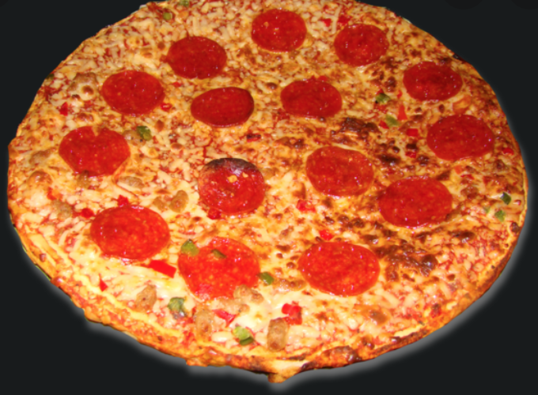

Pizza

Description
Satisfying comfort food for anyone. This pepperoni pizza has it all from a well seasoned pizza sauce to the oh-so-good stretchy cheese and pepperoni.
The thick crust of the pizza and the spicy pepperoni will have everyone drooling for more. Easy to hold and the best party food, pepperoni pizza is the way to go.
Ingredients
- Flower
- Yeast
- Tomato Sauce
- Pizza Seasoning
- Cheese
- Pepperoni
Steps
- Mix flower, yeast and water to make the dough.
- Prove dough for 30 min.
- Stir pizza seasoning into the tomato sauce.
- Preheat oven.
- Flatten dough and layer sauce, cheese and pepperoni on top.
- Bake until cheese is golden